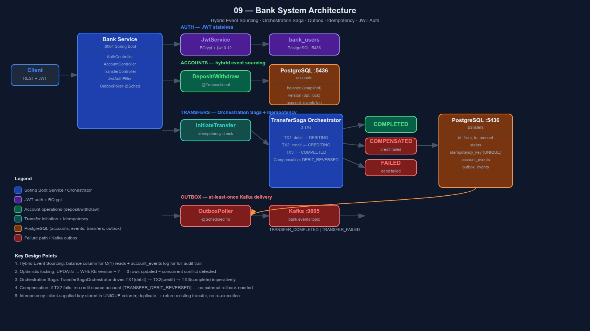

Event Sourcing · Orchestration Saga · Outbox · Idempotency · JWT Auth
A bank system where every account mutation is recorded in an immutable event log. Transfers run as an Orchestration Saga — the orchestrator drives debit → credit steps with compensation if anything fails.
Core challenge: transfer money reliably with a full audit trail, idempotent API, and JWT-protected endpoints.

Both a balance snapshot column and an immutable account_events log. O(1) reads, full audit trail.
accounts table account_events table
────────────────────── ──────────────────────────────────────────────
id | owner_id | balance | version id | account_id | event_type | amount | balance_before | balance_after
| | 750.00 | 3 1 | acc-123 | DEPOSITED | 1000 | 0 | 1000
2 | acc-123 | WITHDRAWN | 100 | 1000 | 900
3 | acc-123 | TRANSFER_DEBITED | 150 | 900 | 750
Optimistic locking:
UPDATE accounts SET balance = ?, version = version + 1
WHERE id = ? AND version = ?
→ 0 rows updated = version mismatch → retry / fail
Full Event Sourcing (not used here):
balance = events.stream().reduce(ZERO, applyEvent) ← O(n)
Needs snapshots at scale — covered in dedicated Event Sourcing project
Full event sourcing adds snapshot/projection complexity that's out of scope here. Hybrid gives O(1) balance reads and a full audit log without that overhead.
DEPOSITED — funds added
WITHDRAWN — funds removed
TRANSFER_DEBITED — saga step 1
TRANSFER_CREDITED — saga step 2
TRANSFER_DEBIT_REVERSED — compensation
TransferSagaOrchestrator drives steps imperatively. Each step runs in its own TransactionTemplate-managed transaction.
Single-service flow. Orchestrator sees full state and drives each step. Easier to reason about than choreography when steps are sequential. Choreography used in project 08 for contrast.
Each step uses txTemplate.executeWithoutResult() so each TX commits independently. Failures don't roll back earlier committed steps — enabling the saga compensation path.
Client sends Idempotency-Key: <uuid> header on POST /transfers. Stored in a UNIQUE DB column.
POST /transfers
+ Idempotency-Key: abc
↓
findByIdempotencyKey("abc")
├─ found → return existing (no saga)
└─ not found → save + execute saga
Duplicate race condition:
DB UNIQUE constraint → 409 Conflict
Stateless. No session. JwtAuthFilter runs before every request.
POST /auth/register
email + password
→ BCrypt hash
→ save User
→ return JWT (24h)
All other endpoints:
Authorization: Bearer <token>
↓
JwtAuthFilter.doFilterInternal()
→ JwtService.isValid(token)
→ JwtService.extractEmail(token)
→ SecurityContextHolder.set(auth)
↓
endpoint proceeds
| Decision | Choice | Why |
|---|---|---|
| Event Sourcing | Hybrid (balance + event log) | O(1) reads; audit trail without snapshot complexity |
| Saga style | Orchestration | Single-service sequential flow; project 08 used choreography for contrast |
| TX granularity | TransactionTemplate per step | Each saga step commits independently; failures don't roll back earlier steps |
| Optimistic locking | Manual version column | Explicit concurrency control — no silent JPA @Version magic |
| Idempotency | Client key + UNIQUE constraint | DB enforces uniqueness; race → DataIntegrityViolationException → 409 |
| Auth | JWT stateless (jjwt 0.12) | No session storage; scales horizontally |
| Password | BCrypt | Adaptive hashing; OWASP recommended |
| Compensation | Re-credit source only | Simple and correct for single-service; full distributed compensation in later projects |
What we build ourselves — to understand what managed services abstract away.
| What we build | AWS equivalent |
|---|---|
| TransferSagaOrchestrator (TransactionTemplate) | Step Functions (Express Workflows) |
| Outbox Poller (@Scheduled) | DynamoDB Streams → Lambda |
| Kafka (final events) | EventBridge / SQS FIFO |
| JWT auth (JwtAuthFilter) | API Gateway + Cognito Authorizer |
| Optimistic locking (version column) | DynamoDB conditional writes (ConditionExpression) |
| Account event log | DynamoDB Streams / Kinesis Data Streams |